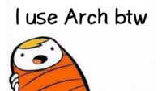

okamoto’s tech blog
安価な積雪深ロガーの自作
はじめに
積雪量は気候変動を考える上で重要な指標である一方、地形などによって空間的な不均質性が高くなりがちで計測が難しい対象だと言えます。大量に積雪深計をばら撒いてデータをたくさん取れると良いですが、ちゃんとした積雪深計は結構値段が高く（数十万円）、気軽に大量購入はできません。
…SongMeter Micro2のバッテリー増設とソーラー化

はじめに
鳥類やコウモリ、カエル、セミやコオロギなど、音を発する生き物は数多くいます。最近では、機械学習による鳴き声の自動判別手法の発展もあって、環境音を通して生態系のさまざまな側面（多様性や季節変化、行動など）を調べる音響生態学という分野ができつつあります。
…shutil.make_archive()が止まらない
事の発端
最近、自分の作った画像解析ソフトウェアをStreamlitでWebアプリケーション化して、研究所のプログラミングに明るくないメンバーに使ってもらっています。Streamlitは（簡単なものなら）かなり簡単に作れるため、プロトタイピングに大変便利ですね！しかし、今日ユーザーから、いつまで経っても処理が終わらない、という報告を受けました。ログを見ると、shutil.make_archive()がNo space left on deviceとだけ言い残して死んでいます。あれ、ホストしてるマシンはSSDのスペースまだかなり余っていたはずだけど、と思ってdfコマンドを叩いてみると、/以下の使用率が100%近くなっていました。
タイル型ウィンドウマネージャ（Hyprland）のすゝめ
はじめに

I use arch, btw…
https://www.reddit.com/r/linuxmemes/comments/9xgfxq/why_i_use_arch_btw/
5年前に大学の研究室に入った際、指導教員から「ウチはWindows禁止だから」という衝撃的な宣告を受けました。セキュリティに穴があるからWindows PCはラボのネットワークにつないではいけないというのです。かと言って今更Macを買うお金も無いし、どうしようと思った矢先に、指導教員の「普段使いのガジェットをLinuxにすれば、自ずとLinuxが使えるようになる」という言葉を思い出しました。当時使っていたノートPCがWindows10非対応の古いマシンだったことも相まって、大学4年生の自分はLinuxへの全面移行を決意しました。
いざ使い始めてみると、WindowsやOSXと違ってオープンで多様なディストリビューションやデスクトップ環境が存在するLinuxは、飽きっぽい自分の性分に大変合っており、半年に1回くらいの頻度で様々なディストリビューションを点々とする生活を送っています。
（Mint -> Ubuntu -> Manjaro -> Arch -> OpenSUSE -> Endeavour -> Regolith -> Arch）
RaspberryPi 5のセットアップ
はじめに
RaspberryPi5（RPi5）がついに日本でも発売されましたね！ バッテリーでバックアップ可能なRealTimeClock(RTC)やUART用コネクタ、独自開発のI/Oチップ “RP1” 等の採用等、RPi5にはRPi4にはない特徴がいくつかあります。この記事では、RPi5のセットアップを行いながらこれらの新機能を試してみたいと思います。
…Anycubic KobraNeo の改造
はじめに
最近、研究で3Dプリンターを使うことが多くなりました。 野外になにか観測機器を設置しようと思うと、その場に合わせた微妙な形の治具を作る必要に迫られることが多々有ります。 これまではアルミ板を加工したりホムセンで売ってる既存の治具を組み合わせて頑張っていたのですが、 3Dプリンターで自由に作れるととても便利です。3DCADも最近はかなり使いやすくなってきたらしく、 それほど勉強しないでもある程度のものは作れます。私はLinuxユーザーなのでクラウドで動いてブラウザ上でいじれるOnshape を使っていますが、かなりいい感じです。
…山岳風景写真地理情報化パッケージ`alproj`の使い方
alprojの概要
alprojは山岳域で撮影された風景写真を地理情報化（いわゆるオルソ化）し、GISツールを用いた解析に用いることができるようにするPythonパッケージです。
これを既存の画像解析と組み合わせることによって、例えば登山者が撮影した風景写真から残雪域や植生の地図を作成することができます。
Rで青空文庫のテキストを著者ごとに取得する
はじめに
Word2VecやVAEを使ったテキスト潜在意味空間構築について興味を持ち始めました。
ここでは手始めにRのWebスクレイピングパッケージrvestを使って青空文庫のテキストを、著者ごとに一気にダウンロードし、ルビの削除などの下処理をします。
ZIPファイルのダウンロードからテキストファイルの保存までは、RMeCabのサポートページの関数を流用しています。
aozora_all()は作者別作品リストのURLを引数に取って、ワーキングディレクトリ直下に作品別のテキストファイルを、NORUBYディレクトリ内にルビを削除したテキストファイルを保存します。
…ユクスキュルの環世界とオートマトンへの実装
20世紀前半の生物学者・哲学者ユクスキュルはカント観念論の生物学への応用として、生物が生きる世界は、彼ら当人にとっての世界に他ならないという主張を立てた。この「主体的な生態学」は一見突飛に見えるが、例えば「完全にローカルな人工生命モデル」を考える上では非常に重要な提言のように思える。この文章では環世界の考えと背景を概観し、人工生命において「基礎的環世界」を実装しようとした研究例を紹介する。さらには、カント観念論という強大な背景がもたらす科学者にとっての受け入れがたさを、環世界をベルクソンの認識論のもとで捉え直すことによって解消できないか模索する。
…